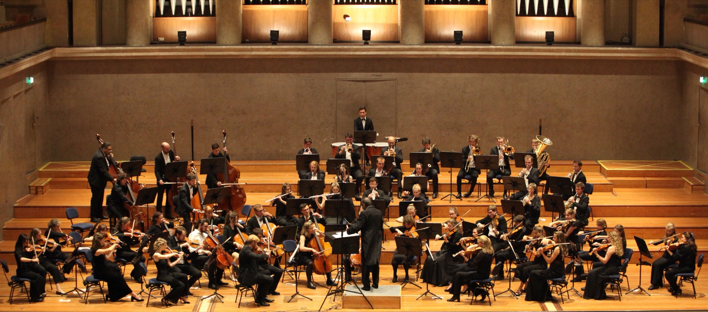
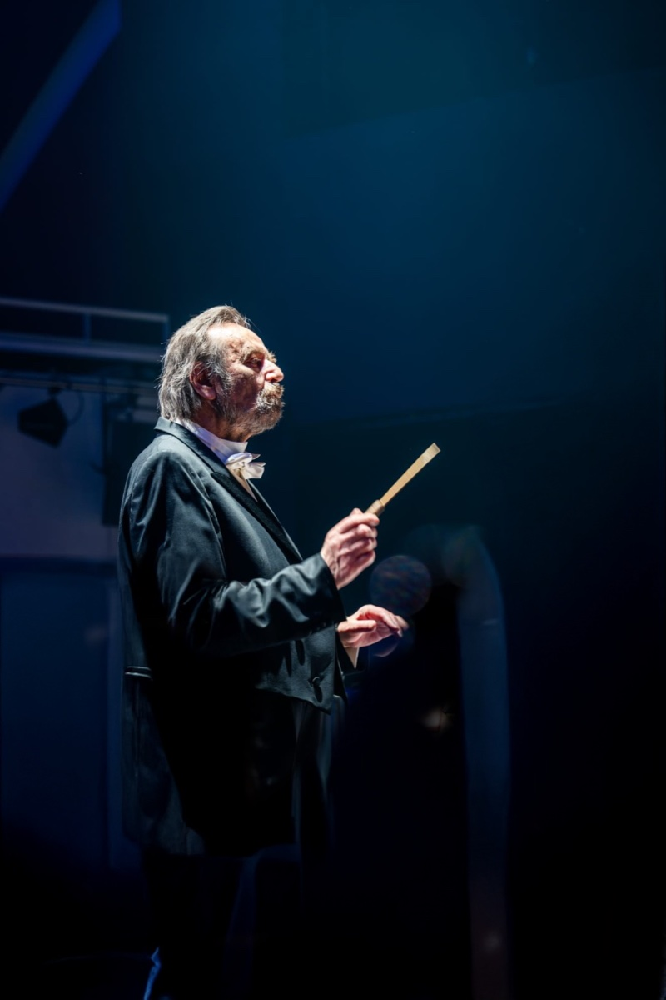

Über uns
Ein Dirigent, zwei Orchester – Leidenschaft für klassische Musik seit über 30 Jahren
Ein Dirigent, zwei Orchester – Leidenschaft für klassische Musik seit über 30 Jahren

Die Jungen Münchner Symphoniker sind ein junges, engagiertes Orchester. Unser Publikum schätzt, wie wir Freude, Frische und Dynamik mit professionellen Standards und musikalischer Leidenschaft verbinden. Unser Repertoire reicht von der Klassik bis zur Moderne – wir schaffen Konzerterlebnisse, die begeistern, bewegen und in Erinnerung bleiben.
Die Jungen Münchner Symphoniker studieren jährlich vier Programme ein, davon zwei mit symphonischen Werken und Solo-Konzerten, ein Opernkonzert im Sommer und ein Ballkonzert.
Das Orchester umfasst etwa 40–50 Mitglieder aus Studierenden und Berufstätigen – bei Konzerten bei Bedarf durch Profis der Camerata München verstärkt. Wöchentliche Proben finden montags in St. Maximilian statt, mehrmals jährlich ergänzt um Probenwochenenden.

Bernhard Koch wurde als Sohn einer Münchner Musikerfamilie geboren und bekam somit schon sehr früh Kontakt zur klassischen Musik. Im Alter von 5 Jahren erhielt er seinen ersten Klavierunterricht und mit 10 Jahren ersten Geigenunterricht.
Weitere Stationen seines musikalischen Werdegangs sind ein privates Geigenstudium bei einem Konzertmeister der Münchner Philharmoniker, der Studiengang zum Tonmeister, das Studium der Musikwissenschaft, die Mitwirkung als Geiger und Bratscher in mehreren Münchner Orchestern, weiterhin als Bassist 10 Jahre lang Mitglied des Chores der Bayerischen Staatsoper; daneben seit über 30 Jahren Musikpädagoge. Zahlreiche Dirigierkurse bei Wolfgang Seeliger (Darmstadt), Generalmusikdirektor Lutz Herbig (Münster), Prof. Karl-Heinz Bloemke (Musikhochschule Detmold) und Generalmusikdirektor Sergiu Celibidache (München).
Unter dem Motto "Ein Dirigent, zwei Orchester" leitet Bernhard Koch sowohl die Jungen Münchner Symphoniker als auch die Camerata München seit mehr als 30 Jahren.
Die Jungen Münchner Symphoniker sind ein eingetragener, gemeinnütziger Verein. Der Verein ist seiner Satzung nach eine Art Förderverein – dadurch sind die aktiven Mitglieder von der Bürokratie der Vereinsarbeit entlastet.
Aufgrund der Gemeinnützigkeit sind Spenden an unseren Verein voll abzugsfähig. Sie erhalten nach Überweisung umgehend eine Spendenbescheinigung.
Bankverbindung:
Junge Münchner Symphoniker
Stadtsparkasse München
IBAN: DE89 7015 0000 0014 1430 10
BIC: SSKMDEMM
Junge Münchner Symphoniker e.V.
Register-Nr. 15699
Amtsgericht München
Anschrift:
Adalbertstr. 102 / III
D-80799 München
Durch Ihre Spende tragen Sie dazu bei, dass wir weiterhin auf hohem musi-kalischem Niveau proben und auftreten können und klassische Musik lebendig bleibt. Jeder Beitrag, ob groß oder klein, hilft uns, unsere Projekte zu verwirk-lichen und unser Publikum mit unvergesslichen Konzertmomenten zu begeistern. Wir bedanken uns für Ihre Unterstützung.